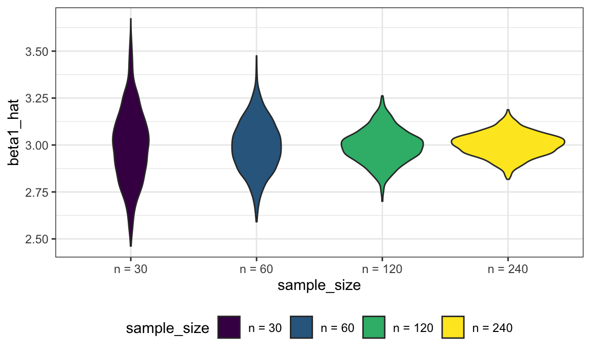
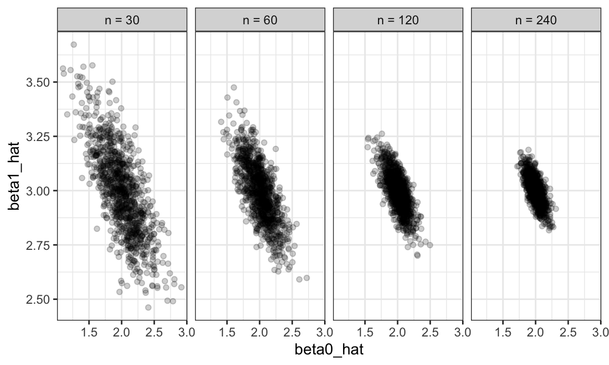

Simulation
We’ve noted that functions are helpful when you repeat code more than twice; we’ve also noted that a lot of statistical methods involve doing the same thing a large number of times. Simulation is a common statistical approach that takes advantage of the ability to iterate many times using computers.
This is the third module in the Iteration topic; the relevant slack channel is here.
Example
I’ll write code for today’s content in a new R Markdown document called simulation.Rmd in the iteration directory / repo. The code chunk below loads the usual packages and sets a seed for reproducibility.
library(tidyverse)
set.seed(1)Simulation: SLR for one \(n\)
In writing functions we wrote a short function to simulate data from a simple linear regression, fit the regression model, and return estimates of regression coefficients. Specifically, we generate data from \[ y_i = \beta_0 + \beta_1 x_i + \epsilon_i \]
for subjects \(1 \leq i \leq n\) with \(\epsilon_i \sim N[0,1]\) and return estimates
\(\hat{\beta}_0, \hat{\beta}_1\). That function is below.
sim_regression = function(n, beta0 = 2, beta1 = 3) {
sim_data = tibble(
x = rnorm(n, mean = 1, sd = 1),
y = beta0 + beta1 * x + rnorm(n, 0, 1)
)
ls_fit = lm(y ~ x, data = sim_data)
tibble(
beta0_hat = coef(ls_fit)[1],
beta1_hat = coef(ls_fit)[2]
)
}Important statistical properties of estimates \(\hat{\beta}_0, \hat{\beta}_1\) are established under the conceptual framework of repeated sampling. If you could draw from a population over and over, your estimates will have a known mean and variance:
\[ \hat{\beta}_0 \sim \left[\beta_0, \sigma^2 \left(\frac{1}{n} + \frac{\bar{x}}{\sum (x_i - \bar{x})^2}\right) \right] \mbox{ and } \hat{\beta}_1 \sim \left[\beta_1,\frac{\sigma^2}{\sum (x_i - \bar{x})^2} \right] \]
(Because our simulation design generates errors from a Normal distribution we also know that the estimates follow a Normal distribution, although that’s not guaranteed by least squares estimation.)
In the real world, drawing samples is time consuming and costly, so “repeated sampling” remains conceptual. On a computer, though, drawing samples is pretty easy. That makes simulation an appealing way to examine the statistical properties of your estimators.
Let’s run sim_regression() 100 times to see the effect of randomness in \(\epsilon\) on estimates \(\hat{\beta}_0, \hat{\beta}_1\).
output = vector("list", 100)
for (i in 1:100) {
output[[i]] = sim_regression(30)
}
sim_results = bind_rows(output)Taking a look at the for loop we used to create these results, you might notice that there’s no input list – the sequence is used to keep track of the output but doesn’t affect the computation performed inside the for loop. In cases like these, the purrr::rerun function is very handy.
sim_results =
rerun(100, sim_regression(30, 2, 3)) %>%
bind_rows()Structurally, rerun is a lot like map – the first argument defines the amount of iteration and the second argument is the function to use in each iteration step. As with map, we’ve replaced a for loop with a segment of code that makes our purpose much more transparent but both approaches give the same results.
Let’s make some quick plots and compute some summaries for our simulation results.
sim_results %>%
ggplot(aes(x = beta0_hat, y = beta1_hat)) +
geom_point()
sim_results %>%
gather(key = parameter, value = estimate, beta0_hat:beta1_hat) %>%
group_by(parameter) %>%
summarize(emp_mean = mean(estimate),
emp_var = var(estimate)) %>%
knitr::kable(digits = 3)| parameter | emp_mean | emp_var |
|---|---|---|
| beta0_hat | 1.995 | 0.081 |
| beta1_hat | 3.021 | 0.056 |
This is great! We’ve seen how our estimates are distributed under our simulation scenario, and can compare empirical results to theoretical ones. In this way, we can build intution for fundamental statistical procedures under repeated sampling in a way that’s not possible with single data sets.
Simulation: SLR for several \(n\)s
Sample size makes a huge difference on the variance of estimates in SLR (and pretty much every statistical method). Let’s try to clarify that effect through simulating at a few sample sizes.
I’ll start this process with a for loop around the code I established above using rerun (I could start from scratch by nesting one for loop in another for loop, but let’s not).
n_list = list("n_30" = 30,
"n_60" = 60,
"n_120" = 120,
"n_240" = 240)
output = vector("list", length = 4)
for (i in 1:4) {
output[[i]] = rerun(100, sim_regression(n_list[[i]])) %>%
bind_rows
}After this loop, output is a list of 4 data frames; each data frame contains the results of 100 simulations at different sample sizes.
Before we spend time looking at the results of the simulation, let’s recast this using list columns and map. I want to use a single function in my call to map_df, so I’m going to write a wrapper for the call to rerun that allows me to change the parameters of the simulation (i.e. the argument to sim_regression) and the number of simulation replicates (i.e. the first argument to rerun). Once I have this, I’ll call map_df to perform the complete simulation.
simulate_n_regressions = function(n_runs = 100, n, beta0 = 2, beta1 = 3) {
rerun(n_runs, sim_regression(n, beta0, beta1)) %>%
bind_rows()
}
sim_results =
tibble(sample_size = c(30, 60, 120, 240)) %>%
mutate(estimate_dfs = map(.x = sample_size, ~simulate_n_regressions(n = .x))) %>%
unnestUsing a different call, I could increase the number of simulation runs or vary the parameters in the regression model:
sim_results =
tibble(sample_size = c(30, 60, 120, 240)) %>%
mutate(
estimate_dfs = map(.x = sample_size, ~simulate_n_regressions(n_runs = 1000, n = .x))
) %>%
unnestLet’s take a look at what we’ve accomplished in our simulations! First I’ll take a look at the distribution of slope estimates across sample sizes.
sim_results %>%
mutate(
sample_size = str_c("n = ", sample_size),
sample_size = fct_inorder(sample_size)) %>%
ggplot(aes(x = sample_size, y = beta1_hat, fill = sample_size)) +
geom_violin()
These estimates are centered around the truth (3) for each sample size, and the width of the distribution shrinks as sample size grows.
Next, I’ll look at the bivariate distribution of intercept and slope estimates across sample sizes.
sim_results %>%
mutate(
sample_size = str_c("n = ", sample_size),
sample_size = fct_inorder(sample_size)) %>%
ggplot(aes(x = beta0_hat, y = beta1_hat)) +
geom_point(alpha = .2) +
facet_grid(~sample_size)
The variability in the slope estimates was shown in the violin plot, but now we have a sense for the bivariate distribution of intercepts and slopes. Estimates of the intercept and slope are correlated with each other; this is expected from theoretical results describing the joint distribution of estimated regression coefficients.
Lastly I’ll look at the empirical mean and variance of these estimates.
sim_results %>%
gather(key = parameter, value = estimate, beta0_hat:beta1_hat) %>%
group_by(parameter, sample_size) %>%
summarize(emp_mean = mean(estimate),
emp_var = var(estimate)) %>%
knitr::kable(digits = 3)| parameter | sample_size | emp_mean | emp_var |
|---|---|---|---|
| beta0_hat | 30 | 1.998 | 0.073 |
| beta0_hat | 60 | 2.000 | 0.037 |
| beta0_hat | 120 | 2.003 | 0.017 |
| beta0_hat | 240 | 1.996 | 0.008 |
| beta1_hat | 30 | 3.003 | 0.036 |
| beta1_hat | 60 | 3.000 | 0.019 |
| beta1_hat | 120 | 2.997 | 0.008 |
| beta1_hat | 240 | 3.003 | 0.004 |
These values are consistent with the formulas presented above. This kind of check is a useful way to support derivations (although they don’t serve as a formal proof in any way).
Simulation: “Publication bias”
We’ll build on our existing simulations to explore an important phenomenon – the tendency to publish “significant” results – and the effect this has results reported in the scientific literature.
We’ll start with a slightly altered version of sim_regression that uses broom::tidy to cleanly format the results of lm.
sim_regression = function(n_samp = 30, beta0 = 2, beta1 = 3) {
sim_data = tibble(
x = rnorm(n_samp),
y = beta0 + beta1 * x + rnorm(n_samp, 0, sqrt(50))
)
ls_fit = lm(y ~ x, data = sim_data)
broom::tidy(ls_fit)
}Using this function, along with simulate_n_regressions and map, I’ll 10000 datasets from the model
\[y_i = \beta_0 + \beta_1 x_{i} + \epsilon_i \]
for each \(\beta_1 \in \{0, 1, 2, 3, 4, 5, 6\}\) and save the results.
sim_results =
tibble(beta1_true = 0:6) %>%
mutate(
estimate_dfs = map(.x = beta1_true, ~simulate_n_regressions(n_runs = 10000, n = 30, beta1 = .x))
) The chunk below does some tidying up of the simulation results by focusing only on estimates for the x term in our model and creating an indicator for statistical significance of a test that the slope is equal to zero.
sim_results =
sim_results %>%
unnest() %>%
filter(term == "x") %>%
select(beta1_true, estimate, p.value) %>%
mutate(significant = as.numeric(p.value < 0.05))The plot below shows the proportion of times the null was rejected (i.e. the power of the test for a fixed alternative) on the y axis and the true value of \(\beta_1\) on the x axis.
The power increases as the effect size of \(\beta_1\) increases. For \(\beta_1=0\), the probability of rejection is near 0.05, which is exactly as expected.
The next plot shows the average of \(\hat{\beta}_1\) on the y axis and the true value of \(\beta_1\) on the x axis (in red), along with the average of \(\hat{\beta}_1\) in cases for which the null is rejected.
results_summary =
sim_results %>%
group_by(beta1_true) %>%
nest() %>%
mutate(
all = map_dbl(.x = data, ~ .x %>% pull(estimate) %>% mean),
signif = map_dbl(.x = data, ~ .x %>% filter(significant == 1) %>% pull(estimate) %>% mean)
) %>%
select(-data) %>%
gather(key = results, value = average, all:signif)
results_summary %>%
ggplot(aes(x = beta1_true, y = average, color = results)) +
geom_point() +
geom_path() As before, the average of \(\hat{\beta}_1\) is approximately equal to the true value when looking at all simulated datasets for that true value. However, the sample average of \(\hat{\beta}_1\) only when the null hypothesis is rejected is not approximately equal to the true value of \(\beta_1\).
To help see why this is the case, the following figure shows the distribution of \(\hat{\beta}_1\) values, separately for each true \(\beta_1\) and according to whether the associated test rejects the null hypothesis.
sim_results %>%
ggplot(aes(x = estimate)) + geom_histogram() +
facet_grid(significant ~ beta1_true)
## `stat_bin()` using `bins = 30`. Pick better value with `binwidth`.
For small true effect sizes (i.e. not far away from 0), only those estimates that are by chance far away from 0 (and the true value) can be rejected. For large effect sizes, the overall average and rejected average are quite similar, as the true value is already far from 0. For the special case 0, samples in both tails (both positive and negative) are rejected with equal probability and the average is close to the true value.
The scary implication is that, when the true effect is small, it is likely that effect estimates reported in the literature are substantially larger than the true value.
Other materials
- Problem of small power leading to over estimation has been discussed here among other places
The code that I produced working examples in lecture is here.